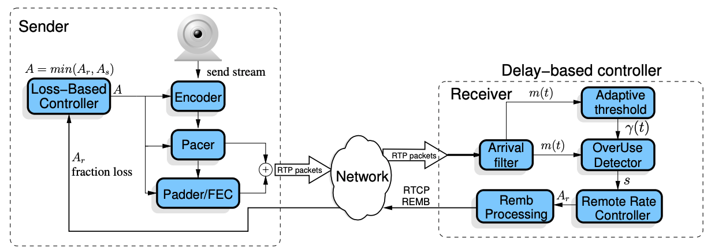
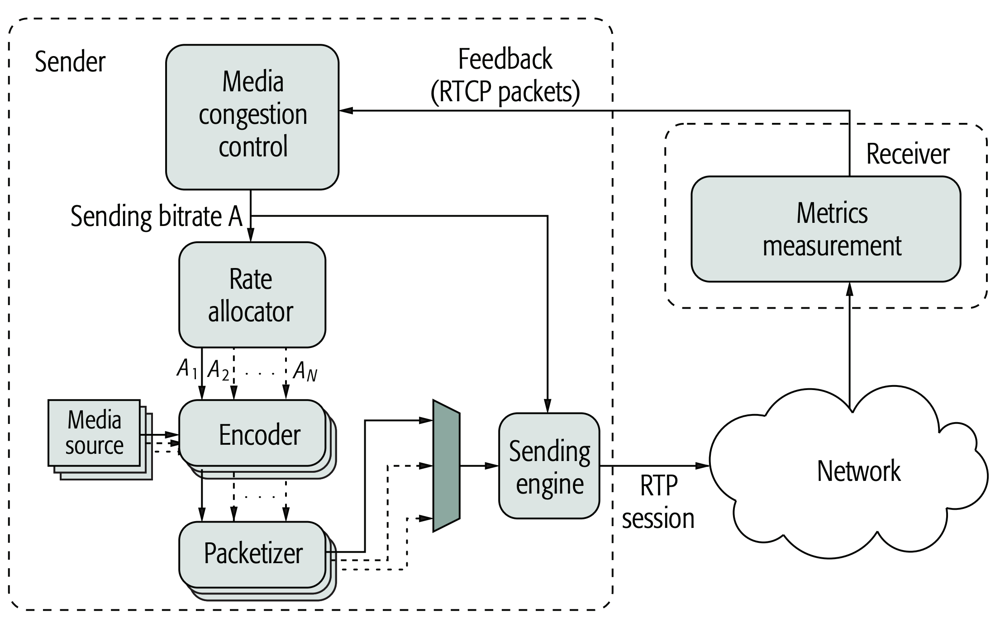

WebRTC 拥塞控制
控制方法
Abstract |
WebRTC Congestion Control |
Authors |
Walter Fan |
Status |
v1.0 |
Updated |
2026-04-21 |
简介
视频会议需要低延迟和高带宽，可是实际情况中，高带宽是难以保证的，一旦网络出现拥塞，原本就不宽阔的“马路” 堵得更窄，延迟更大。 这时候，就需要做拥塞控制.
在网络会议中，如果延迟太大，对在线交流就会产生影响。据研究，大致的关系如下
0 ~ 400 毫秒 |
在交流过程中感觉不到延迟 |
400 ~ 800 毫秒 |
能感觉到延迟，但不影响沟通和交流 |
800 毫秒及以上 |
能感觉到延迟，并且影响沟通和交流 |
以一个每秒 24 帧 640*480 分辨率，以 H.264 编码的视频流，视频的比特率和用户感觉的关系如下
> 800kbps |
用户对视频的清晰度感到满意，感知不到视频图像信息的丢失 |
480 ~ 800kbps |
用户对视频的清晰度基本满意，有些人能感知到视频图像信息的丢失 |
< 480kbps |
用户对视频的清晰度很不满意，大多数时候难以分辨出图像的细节 |
基于延迟的控制器 delay-based controller
基于丢包的控制器 loss-based controller
例如 Google 所提出的
带宽总是有限的, 当我们通过丢包, 延迟的度量指标估算出一个带宽值, 我们就要控制我们的发送速率, 确保它不会大于带宽而超发, 让发送速率不超过 SFU 或接收端的接收速率, 让发送的数据包不会因为超发而丢包, 从而保证接收的视频质量和流畅度.
同时我们在分配带宽时也需要考虑媒体类型, 原则上按如下优先级
Main Audio 来自麦克风的通话质量是需要优先保证的, 所以要优先发送音频媒体包
Sharing Audio 音频流的分享, 其音频媒体数据包优先级也比较高
Sharing Video 屏幕或视频流的分享的优先级仅次于音频
Main Video 来自摄像头的视频通常来说优先级最低
基本架构
在发送方，根据 RTCP Receiver Report 中的 faction lost 得知丢包率，可以调整发送的码率
在接收方，根据 RTP 包到达的时间延迟，通过 arrival time filter, 估算出网络延迟 m(ti), 经过 over-user detector 来判断当前网络的拥塞情况， 再由 Remote rate controller 根据规则计算出最大码率 Ar, 通过 RTCP REMB 消息将 Ar 发回给发送方。 发送方再由 A_s, A_r 和配置，计算出目标的码率 A, 应用到 Encoder 和 Packed Sender 来控制发送方的码率。
{kind=link}

GCC Architecture
术语
RMCAT: RTP Media Congestion Avoidance Techniques 即 RTP 媒体拥塞避免技术
Queuing Delay 排队延迟
Delay gradient 延迟梯度
Kalman filter 卡尔曼滤波
inter-depature delta time 发送间隔时差
inter-arrival delta time 接收间隔时差
inter-group delay variation 包间延迟变化
GCC: Google Congestion control 谷歌拥塞控制
BBR: Bottleneck Bandwidth and Round-trip propagation time 瓶颈带宽和往返传播时间
PCC: Performance-oriented Congestion Control 基于性能的拥塞控制
TCC: Transport-wide Congestion Control 传输带宽控制
REMB: Receiver Estimated Maximum Bitrate 接收端估计最大比特率
ECN: Explicit Congestion Notification (ECN) 显式的拥塞通知
Starvation: 饥饿，如果某个传输通道由于其他传输通道抢占了带宽而没有得到流量，称为饥饿
TMMBR: Temporary Maximum Media Stream Bit Rate Request 临时最大媒体流带宽请求
TMMBN: Temporary Maximum Media Stream Bit Rate Notification 临时最大媒体流带宽通知， 表示 TMMBR 收到
QP: Quantization Parameter, that ranges from 0 to 51. 量化参数 QP 越小，细节保留得越多，质量就更好， 反之质量越差，压缩率更高
QP is an index used to derive a scaling matrix. It is possible to calculate the equivalent quantizer step size (Qstep) for each value of QP.
交互式实时媒体的拥塞控制的需求
基本要求：在最多几百毫秒之内，接收方能够连贯流畅地听到或看到发送方的声音，图像或视频。
拥塞控制算法必须尝试为交互式实时流量提供尽可能低的延迟传输，同时仍然提供有用的带宽量。
该算法必须对其他流公平，包括实时流（例如自身的其他实例）和 TCP 流，包括长期存在的流和突发流量，例如典型的 Web 浏览会话生成的流量。
该算法不应该由于竞争带宽而使得 TCP 流饥饿，并且应该尽可能避免 TCP 流饥饿
该算法应该尽快适应流开始时的初始网络条件。
如果 RTP 流停止或不连续时（例如，当使用 VAD 语音活动检测时），算法应该是稳定的。
在可能的情况下，当 RTP 流共享一个公用的瓶颈时，算法应该综合考虑在两个端点之间发送的多个 RTP 流之间的信息，无论这些流是否复用相同的端口。
该算法不应该需要来自网络元素的任何特殊支持才能传达与拥塞相关的信息。
由于这里假设是一组 RTP 流，反向通道通常应该通过 RTP 控制协议 (RTCP) 完成
由该算法管理的流和在瓶颈处相互竞争的流可能具有不同的差分服务代码点 (DSCP) [2] [RFC5865] 标记，具体取决于流量类型，或者可能受基于流的 QoS 的约束。
该算法应该将反向信道(backchannel)信息的意外缺失, 感知为信道过度使用问题的可能指示，并相应地做出反应, 以避免导致拥塞崩溃的突发事件。
当应用主动队列管理 (AQM: Active Queue Management) 算法时，该算法应该是稳定的并保持低延迟。另请注意，这些算法可能适用于瓶颈中的多个队列或单个队列。
标准化组织及其发布的文档
RMCAT (RTP Media Congestion Avoidance Techniques Work group) 即 RTP 媒体拥塞避免技术工作组是是负责制定拥塞相关的协议和标准。 截止 2021 年 11 月，已经发布了如下的文档
Sending RTP Control Protocol (RTCP) Feedback for Congestion Control in Interactive Multimedia Conferences 在交互式多媒体会议中发送 RTCP 反馈用以拥塞控制
RFC 8298 (was draft-ietf-rmcat-scream-cc)
Self-Clocked Rate Adaptation for Multimedia 用以多媒体的自同步速率适配
RFC 8382 (was draft-ietf-rmcat-sbd)
Shared Bottleneck Detection for Coupled Congestion Control for RTP Media 用于 RTP 媒体的耦合的拥塞控制的共享瓶颈检测
RFC 8593 (was draft-ietf-rmcat-video-traffic-model)
Video Traffic Models for RTP Congestion Control Evaluations 用于 RTP 拥塞控制评估的视频流量模型
RFC 8698 (was draft-ietf-rmcat-nada)
Network-Assisted Dynamic Adaptation (NADA): A Unified Congestion Control Scheme for Real-Time Media 网络辅助动态适应（NADA）：对实时媒体的一种统一的拥塞控制模式
RFC 8699 (was draft-ietf-rmcat-coupled-cc)
Coupled Congestion Control for RTP Media 用于 RTP 媒体的耦合的拥塞控制
RFC 8836 (was draft-ietf-rmcat-cc-requirements)
Congestion Control Requirements for Interactive Real-Time Media 对交互式实时媒体的拥塞控制需求
RFC 8867 (was draft-ietf-rmcat-eval-test)
Test Cases for Evaluating Congestion Control for Interactive Real-Time Media 对交互式实时媒体拥塞控制的评估
RFC 8868 (was draft-ietf-rmcat-eval-criteria)
Evaluating Congestion Control for Interactive Real-Time Media 对交互式实时媒体拥塞控制的评估
RFC 8869 (was draft-ietf-rmcat-wireless-tests)
Evaluation Test Cases for Interactive Real-Time Media over Wireless Networks 对通过无线网络的交互式实时媒体的评估测试用例
标准化状况和存在的问题
参见由 [3] “Luca De Cicco, Gaetano Carlucci, and Saverio Mascolo” 所撰写的文章
建议的方法是在通过一个传输层流发送的单个 RTP 会话中复用所有 RTP 数据包流，以减少 NAT 处理的流数。
遵循这种方法，媒体拥塞控制算法根据在接收器处测量并通过 RTCP 数据包发回的一组指标计算聚合 RTP 会话的总发送速率 A。
速率分配模块将总比特率 A 的一部分 \(A_i\) 分配给每个媒体流。特别是，每个媒体流都以目标编码速率 \(A_i\) 压缩，使得所有这些速率的总和等于计算出的发送速率 A。
然后，媒体流通过一个单一的 RTP 会话进行复用，该会话为发送引擎提供信息。该模块负责以尽可能接近拥塞控制算法计算出的速率向网络发送 RTP 数据包。
值得注意的是，拥塞控制算法的位置没有指定，可以是发送方、接收方或分布在发送方和接收方。
作为示例，下图显示了拥塞控制算法仅放置在发送方的情况。接收器需要实现一个模块，该模块测量要通过 RTCP 数据包反馈给拥塞控制算法的指标。

Requirement |
|
|---|---|
延迟 Latency |
尽可能低于 100ms |
丢包 Packet losses |
越少越好，可应用 FEC |
吞吐量 Throughput |
越高越好 |
突发性 Burstiness |
要产生一个平滑的发送速率 |
公平性 Fairness |
应在实时媒体流和数据流之间公平地分享带宽 |
饥饿 Starvation |
媒体流不应由于过度竞争而使 TCP 流饥饿 |
网络支持 Network support |
无需特别的网络支持即可运行 |
目标
拥塞控制算法的目标是产生尽可能接近可用的端到端带宽的发送速率，同时保持队列占用尽可能低。
此外，WebRTC 应用程序生成的媒体流应该与其他并发流公平地共享网络带宽。
设计
满足这些要求的算法设计面临着几个选择
The transport protocol 传输协议
Congestion detection 拥塞检测
The actuation mechanism to be employed 所采用的驱动机制
通过端到端的度量来检测拥塞的方法可以分为两大类：
基于丢包的算法 Loss-based algorithms
基于延迟的算法 Delay-based algorithms
拥塞检测可以是隐式的（基于在端点执行的端到端测量），也可以是显式的（通过监视路由器的缓冲区长度，在网络元素中直接测量拥塞）。
一般来说，基于延迟的算法优于基于损失的算法，有如下两个原因：
首先，基于延迟的方案可以在数据包因缓冲区溢出而丢失之前检测到拥塞；
其次，基于损失的算法无法控制排队延迟，因为它们通过填充和耗尽 Internet 缓冲区不断探测网络可用带宽，从而产生显着的延迟变化。
注意：
显式控制排队延迟是必要的，因为过大的缓冲区可能会导致几秒的延迟
需要考虑的一个重要问题是在尽力而为的互联网中与基于损失的流量竞争时，防止基于延迟的流量被饿死。
拥塞控制算法可以使用从网络元素发送到端点的显式拥塞信号来补充端到端测量，例如通过使用显式拥塞通知 (ECN) 机制。
关于驱动机制, 拥塞控制算法或者计算一个 congestion window (window-based approach) ，或者显式计算一个 sending rate (rate-based approach).
基于速率的机制的使用使得可以直接使用拥塞控制算法计算的速率来驱动媒体编码器，而在基于窗口的算法的情况下，应该执行从窗口到速率的适当转换。
关键指标
来往时间 Round-Trip Time
单向延迟 One-Way Delay
单向延迟变化 One-Way Delay Variation (OWDV)

packet transmission delay
# 发送间隔与到达时间之间的延时
d(i) = t(i) – t(i-1) – (T(i) – T(i-1))
RTP 头里带的 timestamp 是根据采样所算的步进, 接收方和发送方的时钟偏移可以不予考虑，因为计算的两个包之间在双方间隔之差，偏移时间可相互抵消。
有三种情况:
OWDV > 0: 排队延迟在增长
OWDV < 0: 排队延迟在减小
OWDV = 0: 排队延迟保持在一个恒定的值:
拥塞队列是空的：发送速率小于传输能力，不需要排队
拥塞队列是满的：发送速率大于传输能力，排队堵住了
拥塞队列是空的：发送速率等于传输能力，排队有序通过
第 3 种情况下，队列保持不变，OWDV 介于零和其最大值之间。 这是一种称为站立队列的不良情况，它会不断延迟传入流量。 因此，为了在充分利用可用带宽的同时保证较小的队列占用，算法必须通过增加其发送速率来持续探测可用带宽，直到检测到正排队延迟变化。 此时，发送速率应迅速降低。 总而言之，需要引入一些排队延迟来运行基于延迟变化的拥塞控制算法。
常用方法
调整速率：例如调整帧率 FrameRate， VBR（Variable BitRate)的编码方法中调整码率 等
调整质量：例如调整分辨率 FrameWidth * FrameHeight，量化参数 Quantization Parameter 等
拥塞控制算法
已有三种算法提出来， 详见下表
Feature |
GCC |
NADA |
SCReAM |
|---|---|---|---|
Metrics |
One-way delay variation,loss ratio |
One-way delay, loss ratio |
One-way delay, loss ratio |
Architecture |
Sender-side or hybrid |
Sender-side |
Sender-side |
Actuation mechanism |
Rate-based |
Rate-based |
Window-based |
Network support |
None |
ECN, PCN |
ECN |
Implementation status |
Google Chrome |
Ns-2 and Ns-3 simulators |
OpenWebRTC and simulator |
Codec interaction |
VP8 and VP9 |
Simulated encoder |
OpenH264 and VP9 |
1. GCC by Google
Google Congestion Control (GCC) 被应用于 Chrome 浏览器，是相对比较成熟的算法，详见
2. NADA by Cisco
Network Assisted Dynamic Adaptation(NADA) 由思科提出，还未应用于实际产品中，有相关的模拟器实现
3. SCReAM by Ericsson
Self-Clocked Rate Adaptation for Multimedia(SCReAM) 由爱立信提出，应用于 OpenWebRTC，有相关的模拟器实现
对于拥塞控制算法的评估和验证
基于 RFC5033 Specify New Congestion Control Algorithms 和 RFC5166 Metrics for the Evaluation of Congestion Control algorithms, 在 RFC8868 中提出了对于拥塞控制算法的验证方法.
RFC8867 提出了基本的测试用例,在RFC8869 也提高了无线网络测试场景中的测试用例.
基本的测试环境如下
+---+ +---+
|S1 |====== \ Forward --> / =======|R1 |
+---+ \\ // +---+
\\ //
+---+ +-----+ +-----+ +---+
|S2 |=======| A |--------------------------->| B |=======|R2 |
+---+ | |<---------------------------| | +---+
+-----+ +-----+
(...) // \\ (...)
// <-- Backward \\
+---+ // \\ +---+
|Sn |====== / \ ======|Rn |
+---+ +---+
Figure 1: Example of a Testbed Topology
度量指标
Sending rate, receiver rate, goodput (measured at 200ms intervals)
Packets sent, packets received
Bytes sent, bytes received
Packet delay
Packets lost, packets discarded (from the playout or de-jitter buffer)
If using retransmission or FEC: post-repair loss
Self-fairness and fairness with respect to cross traffic:
Convergence time: The time taken to reach a stable rate at startup, after the available link capacity changes, or when new flows get added to the bottleneck link.
Instability or oscillation in the sending rate: The frequency or number of instances when the sending rate oscillates between an high watermark level and a low watermark level, or vice-versa in a defined time window. For example, the watermarks can be set at 4x interval: 500 Kbps, 2 Mbps, and a time window of 500 ms.
Bandwidth utilization, defined as the ratio of the instantaneous sending rate to the instantaneous bottleneck capacity: This metric is useful only when a congestion-controlled RTP flow is by itself or is competing with similar cross-traffic.
从日志中，可以计算整个持续时间或会话的任何特定部分的统计度量（最小值、最大值、平均值、标准偏差和方差）。 此外，指标（发送速率、接收器速率、吞吐量、延迟）可以在图表中可视化为随时间的变化； 图中的测量值以一秒为间隔。 此外，从日志中，可以绘制数据包延迟的直方图或累积分布函数 (CDF)
RTP Log Format 日志格式
Having a common log format simplifies running analyses across different measurement setups and comparing their results.
Send or receive timestamp (Unix): <int>.<int> -- sec.usec decimal
RTP payload type <int> -- decimal
SSRC <int> -- hexadecimal
RTP sequence no <int> -- decimal
RTP timestamp <int> -- decimal
marker bit 0|1 -- character
Payload size <int> -- # bytes, decimal
发送端拥塞控制架构
现代 WebRTC 采用发送端拥塞控制架构，核心组件包括：
┌─────────────────────────────────────────────────────────┐
│ 发送端 │
│ │
│ ┌──────────┐ ┌────────────────┐ ┌─────────────┐ │
│ │ Encoder │───→│ BitrateAllocator│───→│ PacedSender │─┼──→ 网络
│ └──────────┘ └────────────────┘ └─────────────┘ │
│ ↑ ↑ ↑ │
│ │ ┌──────┴──────┐ ┌──────┴──────┐ │
│ │ │ GoogCcCtrl │ │ProbeControl │ │
│ │ └──────┬──────┘ └─────────────┘ │
│ │ ↑ │
│ │ ┌──────┴──────┐ │
│ │ │ TWCC 反馈 │←── RTCP Transport-CC │
│ │ └─────────────┘ │
│ │ │
│ ┌────┴──────────────────────────┐ │
│ │ CongestionWindowPushback │ │
│ │ Controller │ │
│ └───────────────────────────────┘ │
└─────────────────────────────────────────────────────────┘
BitrateAllocator：带宽分配器，负责将估算的总带宽分配给各个媒体流。根据流的优先级、最小/最大码率约束进行分配。
PacedSender（TaskQueuePacedSender）：包发送节奏控制器，确保 RTP 包以平滑的速率发送，避免突发发送导致网络拥塞。典型的发送间隔为 5ms。
ProbeController：带宽探测控制器，在会话开始或带宽变化时，通过发送探测包（probe clusters）来快速探测可用带宽。
CongestionWindowPushbackController：拥塞窗口回退控制器，当网络拥塞时，通过限制发送窗口来降低发送速率，防止过度发送。
带宽分配策略
WebRTC 的带宽分配遵循优先级原则：
优先级排序
优先级 |
媒体类型 |
典型码率 |
说明 |
|---|---|---|---|
1（最高） |
Main Audio（麦克风） |
32-128 kbps |
通话质量必须优先保证 |
2 |
Sharing Audio（音频分享） |
32-128 kbps |
音频分享优先级也较高 |
3 |
Screen Share（屏幕分享） |
200-2000 kbps |
屏幕内容清晰度重要 |
4（最低） |
Main Video（摄像头） |
200-2500 kbps |
视频质量可适当降低 |
Simulcast 层选择
在 Simulcast 模式下，发送端同时编码多个分辨率层：
高层 (High): 1280x720 @ 30fps ~2500 kbps
中层 (Medium): 640x360 @ 30fps ~500 kbps
低层 (Low): 320x180 @ 15fps ~150 kbps
SFU 根据接收端的可用带宽选择转发哪一层。当带宽不足时，优先降低视频层级而非丢弃音频。
时域分层（Temporal Layer）
VP8/VP9 支持时域分层，可以在不重新编码的情况下降低帧率：
TL2: 30fps (所有帧) ← 带宽充足时
TL1: 15fps (基础帧+TL1) ← 带宽中等时
TL0: 7.5fps (仅基础帧) ← 带宽紧张时
码率自适应流程
端到端的码率自适应流程：
1. 带宽估计
TWCC 反馈 → GoogCcNetworkController → 估算可用带宽 A
2. 带宽分配
BitrateAllocator 将 A 分配给各流：
A_audio = min(A, audio_max)
A_video = A - A_audio - A_overhead
3. 编码器重配置
VideoStreamEncoder 收到新目标码率后：
- 如果码率 > 当前分辨率的最小码率 → 调整 QP
- 如果码率 < 当前分辨率的最小码率 → 降低分辨率
- 如果码率 < 最低分辨率的最小码率 → 降低帧率
4. 质量降级顺序（GracefulDegradation）
QP 增大 → 分辨率降低 → 帧率降低 → 暂停发送
编码器的质量缩放器（QualityScaler）监控编码 QP 值：
QP 持续偏高 → 触发分辨率降低（如 1280x720 → 960x540 → 640x360）
QP 持续偏低 → 触发分辨率提升
qualityLimitationReason统计指标反映当前限制原因：none,cpu,bandwidth,other
网络参数
1. One-Way Propagation Delay
单向传播延迟是数据包从发送端到接收端的传输时间。在拥塞控制中，OWD 的变化（而非绝对值）是关键信号：
OWD 增加 → 网络队列在积累 → 可能发生拥塞
OWD 减少 → 网络队列在排空 → 拥塞缓解
OWD 稳定 → 网络状态稳定
WebRTC 通过 TWCC 反馈中的到达时间来计算 OWD 变化。
2. End-to-End Loss
端到端丢包率通过 RTCP RR 中的 fraction lost 字段报告。丢包率的变化趋势比绝对值更重要：
丢包率突然上升 → 网络拥塞或链路故障
持续低丢包率 → 网络状态良好
周期性丢包 → 可能存在 WiFi 干扰或定时任务
基于丢包的控制器通常在丢包率超过阈值（如 2-5%）时降低发送码率。
3. Drop-Tail Router Queue Length
路由器队列长度直接影响排队延迟。在测试环境中，可以配置不同的队列长度来模拟不同的网络条件：
小队列（如 50 个包）：低延迟但容易丢包
大队列（如 500 个包）：不易丢包但延迟高（Buffer Bloat）
AQM（如 CoDel、PIE）：主动丢包以控制延迟
4. Loss Generation Module
测试中常用的丢包模型：
随机丢包（Random Loss）：每个包独立地以概率 p 丢失
突发丢包（Burst Loss）：使用 Gilbert-Elliott 模型，丢包呈突发性
周期性丢包：每 N 个包丢失 1 个
5. Jitter Modules
抖动模型用于模拟网络延迟变化：
均匀分布抖动：延迟在 [min, max] 范围内均匀分布
正态分布抖动：延迟服从正态分布 N(μ, σ²)
突发抖动：偶尔出现大幅延迟跳变
6. Traffic Models
RFC 8593 定义了用于评估的视频流量模型：
恒定码率（CBR）：固定大小的帧，固定间隔
可变码率（VBR）：帧大小变化，I 帧较大
真实编码器模型：使用实际编码器（VP8/H.264）生成流量
实际部署中的挑战
WiFi vs 蜂窝网络
WiFi：突发性延迟和丢包（信道竞争、干扰），半双工特性，带宽波动大
蜂窝网络：延迟较高但相对稳定，上行带宽有限，切换基站时可能出现短暂中断
拥塞控制算法需要针对不同网络类型调整参数
跨区域延迟
跨洲际通信的 RTT 可达 200-400ms，这对基于 NACK 的丢包恢复和拥塞控制的收敛速度都有影响。建议：
高 RTT 场景增加 FEC 保护
调整拥塞控制的探测间隔
考虑使用中继服务器（TURN/SFU）降低有效 RTT
竞争流
当 WebRTC 流与 TCP 流（如文件下载、网页浏览）共享瓶颈链路时：
基于延迟的算法（如 GCC）可能被 TCP 的基于丢包的策略"饿死"
需要在公平性和实时性之间权衡
WebRTC 的 loss-based controller 部分缓解了这个问题
Buffer Bloat
过大的网络缓冲区（Buffer Bloat）会导致：
排队延迟高达数秒
基于延迟的拥塞检测反应迟缓
用户体验严重下降
解决方案包括：AQM（CoDel、PIE）、ECN 标记、L4S（Low Latency Low Loss Scalable throughput）。
与 SFU 的交互
在 SFU 架构中，拥塞控制面临额外挑战：
发送端到 SFU 和 SFU 到接收端是两段独立的链路
SFU 需要根据下行链路状况选择转发的 Simulcast 层
SFU 的转发延迟会影响 TWCC 反馈的准确性
多个接收端的带宽差异需要 SFU 做差异化转发
参考资料
Analysis and Design of the Google Congestion Control for WebRTC
What is RMCAT congestion control, and how will it affect WebRTC?
RMCAT documents: RTP Media Congestion Avoidance Techniques documents
RFC8825: Overview: Real-Time Protocols for Browser-Based Applications
RFC8836: Congestion Control Requirements for Interactive Real-Time Media
RFC8083: Multimedia Congestion Control: Circuit Breakers for Unicast RTP Sessions
RFC8888 RTP Control Protocol (RTCP) Feedback for Congestion Control
RFC3168 The Addition of Explicit Congestion Notification (ECN) to IP
Alvestrand, “RTCP Message for Receiver Estimated Maximum Bitrate,” Internet-Draft draft-alvestrand-rmcat-remb-03 (work in progress), Oct. 2013.
Briscoe et al., “Reducing Internet Latency: A Survey of Techniques and Their Merits,” IEEE Commun. Surveys Tutori- als, vol. 18, no. 3, 2016, pp. 2149–96.
Carlucci et al., “Analysis and Design of the Google Congestion Control for Web Real-time Communication (WebRTC),” Proc. ACM Multimedia Systems Conf., Klagen- furt, Austria, May 2016.
Johansson, “Self-clocked Rate Adaptation for Conversa- tional Video in LTE,” Proc. 2014 ACM SIGCOMM Wksp. Capacity Sharing Workshop, Chicago, USA, Aug. 2014, pp. 51–56.
Loreto and S. P. Romano, “Real-Time Communications in the Web: Issues, Achievements, and Ongoing Standardiza- tion Efforts,” IEEE Internet Computing, vol. 16, no. 5, Sept. 2012, pp. 68–73.
Perkins and V. Singh, “Multimedia Congestion Control: Circuit Breakers for Unicast RTP Sessions,” RFC 8083, RFC Editor, Mar. 2017.
J Randell and Z. Sarker, “Congestion Control Requirements for RMCAT,” Internet-Draft draft-ietf-rmcat-cc-require- ments-09 (work in progress), Dec. 2014.
Sarkeret al., “RTP Control Protocol (RTCP) Feedback for Congestion Control,” Internet-Draft draft-dt-rmcat-feedback- message-01 (work in progress), Oct. 2016.
Sarker et al., “Test Cases for Evaluating RMCAT Propos- als,” Internet-Draft draft-ietf-rmcat-eval-test-04 (work in prog- ress), Oct. 2016.
Singer and H. Desineni, “Transmission Time Offsets in RTP Streams,” RFC 5450, RFC Editor, Mar. 2009.
Welzl, S. Islam, and S. Gjessing, “Coupled Congestion Control for RTP Media,” Internet-Draft draft-ietf-rmcat-cou- pled-cc-06 (work in progress), Mar. 2017.
Zhu et al., “NADA: A Unified Congestion Control Scheme for Real-Time Media,” Internet-Draft draft-ietf-rmcat- nada-04 (work in progress), Mar. 2017.